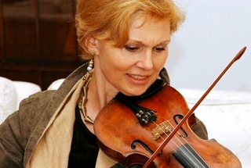

Grindenko Tatiana

The acknowledged leader of modern avant-garde music Iannis Xenakis remained quite satisfied after hearing for the first time the performance of his large-scale works in the Big Hall of Moscow conservatory. The maestro especially admired Tatiana Grindenko’s playing. She performed “Dox-Orkh” and once again proved that she was not matched by anyone both in classical and modern genres. Usually very restrained Iannis didn’t hide his feelings about Tatiana’s performance: he ran on the stage and kissed the performer repeatedly.
MOSKOVSKIY KOMSOMOLETS (Russia)
Tatiana Grindenko is not merely a name in the modern performance but the sign of a special way of development – the way which only a few can walk. It seems that even on the tightest of turns she is invisibly favored by muses. That’s why the efforts of Tatiana – be it the reconstruction of forgotten masterpieces from centuries ago, the performance of the rarest and refined baroque music, radical avant-garde experiments or theatrical and conducting works – are all of the highest class.
Dmitry Desyaterik DEN (Ukraine)
The first concert of Tatiana Grindenko – the performance of J.-S. Bach with the Kharkov Philharmonic Orchestra – was given when she was eight years old. The career of this outstanding violinist, famous violin teacher Yuri Yankelevich alumna, the graduate of the Moscow Tchaikovsky Conservatory, the participant and nominee of a number of international contests, has been developing in a most lively and fruitful manner possible. Beginning with 1968 when her first performance abroad took place, she has been actively giving concerts with leading orchestras of Soviet Union and Europe, although she was not limited by the classical music only. In 1974 Tatiana Grindenko visited the Moscow’s Museum of Skryabin which held the Experimental Studio for Electronic Music and witnessed a rehearsal of underground rock group BOOMERANG, which impressed her so much that she actually joined the band. Her daytime usually passed with no significant changes, surrounded by the academic classical music and in the evenings normal violin was replaced by that amplified and the night was entirely devoted to rehearsals, studio recordings and rock improvisations. The violin player’s activities within the group were totally different to what she used to perform on the academic scene. The free feeling and boldness of the collective brought some fresh air in the creative work of the violinist and laid down conceptual basis of the subsequent creation of the ACADEMY OF EARLY MUSIC. Without changing the performing style, which is characterized by a very flexible and tensely expressive playing, she appeared as a member of art-rock collective and created unique phenomenon for its time together with such brilliant musicians (who were also members of the group) as Vladimir Martynov, Edward Artemiev, Sergey Bogdanov and Yuri Bogdanov, Alexander Kononov, Sergey Zakirov, Valentin Kozlovskiy, Sergey Savelyev and others. Later, being a member of rock group FORPOST which was created by Vladimir Martynov in 1978, Tatiana participated in a number of avant-garde festivals and events. A serious shock for Tatiana Grindenko, which actually led to re-estimating her own mastery and understanding of music, became the “baptizing” with Harnoncour. As a sudden revelation came the sounds of Bach’s “Matthew’s Passions” performed by the unmatched CONCENTUS MUSICUS WIEN ensemble conducted by Nikolaus Harnoncourt. After that all efforts to play seemed impossible to her. She refrained from playing violin for two years, not willing to dwell under the mockingly harmonic but utterly false roof of academic education that let the pre-Bach tradition of characteristic ascetics, strict purity and noble diversity fall into oblivion. Things turned up in such a way that Tatiana fell into disgrace of the state ideologists and in 1978 calm set in her scenic career. Being unable to leave the country or give concerts as well as make radio or TV appearances, thus finding herself in a state of professional isolation, Tatiana, as strange as it may seem, actually gained absolute freedom of creation which was no longer controlled by any official structures. The decade of her “parting with the scene” was devoted to the research of ancient and avant-garde music and also during that period she used to sing in the temple of the Cathedral of the Sign of Our Lady (Moscow) as well as in other churches.
In the middle of this seemingly unfavorable period, namely in 1982, a wonderful child of hers was born – ACADEMY OF EARLY MUSIC, an ensemble that followed the genuine traditions and performed music in its primary form using original early instruments, exploring and recreating early scores, many of them unknown even among music specialists. Within a short spell the ACADEMY that appeared thanks to private efforts of Tatiana Grindenko, Alexey Lubimov and every musician playing with the ensemble, gained a fame of a virtuoso, lively ensemble that was never repeating itself. The ensemble was a serious but brief part in the biographies of many musicians, including such masters as Vladimir Spivakov, Mikhail Milman and others who later formed an ensemble called MOSCOW VIRTUOSI. For a musician of conservatoire fame to fit the demands of ACADEMY meant hard and sometimes painful collapse of his own vision and approach to music: the denying of the dominating role of your own personality, the scrupulous mastering of ancient music’s language as well as accepting special norms that are unusual for our time. Playing music while following these rules is akin to putting yourself to a monastery: the conscious renunciation of the world and acceptance of the new rules consciously and by a good will, not as a punishment, but as a blessing which can only be the choice of the few. Since 1989 the scene has been accessible for Tatiana once again. Together with ACADEMY OF EARLY MUSIC she gave concerts and successfully performed all over the world receiving invitations from various international musical festivals. For several years Tatiana was working in tandem with another outstanding violin player Gidon Kremer. A lot of musicians devoted their works to Tatiana or both her and Gidon. Among them Alfred Schnittke, Arvo Part, Vladimir Martynov and others. As a soloist Tatiana performed with the best symphonic orchestras of Russia, Europe and USA, as well as played with such masters as Vladimir Ashkenazi, Yuri Bashmet, Ivan Monighetti, Evgeny Mravinsky, Gennady Rozhdestvensky, Mstislav Rostropovich, Yuri Temirkanov and others.
The uniqueness of the violinist lies in her performing experience which is marked with early authenticity, academic classical approach, electronic aesthetics and avant-garde diversity. She is also unique in her non-compromising nature and unchanging tendency toward true art, without allowing any scenic mockery to creep in, be it a mockery in the relations between performer and music or between listener and musical work that is being performed.
In June, 10, 2003 under decree issued by the president of Russian Federation, Tatiana Grindenko became the laureate of the State Prize in the field of literature and arts of 2002 for the performance of “Apocalypse”, “Prophet Jeremiah’s Cry”, “Magnificate”, “Requiem”, “A Night In Galicia”, “Exercises and Dances of Guido”, “Games of Men and Angels” and “Song of the Songs”. At this moment Tatiana very actively does gigs with ACADEMY playing concerts in Russia and all over the world and presenting new projects of musical performances and original scenic events every year. The violin player participates both as a soloist and with the ensemble in various academic and avant-garde events, performing on a regular basis in the Moscow Tchaikovsky Conservatory as well as in private culture centers. She does not cease to amaze even those who have been fans of her career for years.
… The Moscow Chamber Academy ... enchanted the Italians in Udine with their own lost musical treasure (Il Re Pastore by Baldassare Galuppi)
(HNA)
… The playing of the Moscow Chamber Academy was ... invariably flawlessness. Tatiana Grindenko... showed herself to be a remarkable specialist in period performance...the instrumental interludes were among the highlights of (Il Re Pastore). Outstanding ensemble, a high level of virtuosity, well-judged tempi, elegant ornamentation and beautifully-player passage work gave the music lightness and liveliness…(WIZ)
… the outstanding ability of all members of the Chamber Academy ... under Tatiana Grindenko's inspiring leadership contributed to the marvelous performance…(Potsdamer Neueste Nachrichten)
… people who developed this style never played anything like this well, and there is not a large number of ensembles in any area of music, let alone early music, who consistently play at this virtuoso level.(Boston Globe)
… l'incontro del prete rosso con l'anima russa ha contributo ha determinare un memorable successo.(Corriere della Sera)
… The ability of (Tatiana Grindenko) to rise above the orchestra by her powerful playing remarkable sound quality, which biased out in virtuoso moments, was extraordinary…(Svenska Dagbladet)
The ensemble alike had made an impression of carefully elected and masterfully adjusted band of musicians. (...) The sound of the Moscow's Academy was silverlike, and members of it have had, it seems, an inimitable, maybe weird, ability to understand each other without saying any word. Ms. Tatiana Grindenko, an organizer and leader of the splendid ensemble was incostestable primadonna during the performance as whole. The audience had responded with exalted applause and requests for an encore. (...)(Klagenfurt)
(...) The members of the Moscow's Cameral Academy, a small but bright band, made an unforgettable impression onto an audience owing to general excellence of its performance, especially by richness of expression., vividness of phraseology, and dynamical in diffirentialiaty. (...) The leader of the band was Ms. Tatiana Grindenko, a representative of one among the best violinists' school. It might be noted also such valuable qualities of that ensemble as saturated roundish sound, high fidelity, ecnical brightness, and deeply feeling. Any member of that band have all the qualities necessary for a soloist. (...) Ms. Grindenko had impressed by her vivid and easy manner and thanks to it a lively allegro along with a tinge of noble grave was transferred succesfully.(MAZ, Manfred Meier)
Tatiana Grindenko and her Moscow's Academy had shown their best qualities as well as their own highest artistical level with the Four Seasons^ theme during a performance in the Linzer Brucknerhaus. The first half of the performance was dominated by a well known music but sounding of it was appreciated as something fresh and admirably new due vivid bow and fiery violin of Ms. Grindenko. (...)(OO Kronenzeitung)
<...> As for the music the following must be said also, directly and downright: an extraordinary soloist from Moscow, Tatyana Grindenko was responsible for it too, and in a great part. During the heading phrase Allegro ma non troppo she had broke in orchestra's sound with her skylarklike play, her bow was tensed enormously, her performance was capturing and brave, robust even blunt and sensible at the same time. The brilliant twin solo or rather two solos for two parts in two octaves took away the audience's breath. The Larghetto occured as not too surprising: the violin with its brittle figures was on the top and the role of the ochestra rather was to provide melodicai material. <...>(BERGISCHE MORGENPOST)
...but the originality of the unique Russian melodies that has such traites as an unsophisticated structuring of musical message along with a refined sounding of vocalism and evident dancing elements was obvious during the performance of the Moscow Academy headed by Ms. Grindenko and the audience who happened to be in the church were endowed with an unfogertable impression, especially, after sonates and variations by Maxime Bortnyansky and Ivan Khandoshkin. (...)(Der Tagesspiegel MUSIC IN BERLIN)
An audience who have had a happy occasion to listen the concerto for string instruments written by Lolli in and performed recently by brilliant Tatiana Grindenko might comprehend and conceive the emotions of the Czarina who admirated Lolly literally. (...) Naturally, an experience of outstanding abilities and skills of members of the Moscow's Academy of Cameral Music headed by Ms. Grindenko may create an impression of sounding a single soloist not band. Nevertheless, Ms.'s Grindenko magical bow and charming violin were recognizable despite of an excellent background produced by her fellows. A final composition written by an unknown author had followed by loud and long applause.(Potsdamer Neueste Nachiichten)
She had moving her bow on her violin in such eager, energetic manner that could to do an impression of the age when the music was borne. And and the sonate... were distinguishing by a refined and elegant sounding. (...) The Theme for variations by Ivan Khandoshkin, a composition for a pair of violins were performed with vivid zest and in a masterly fashion. The hearts of the audience had winned by brilliant skillfullness and refined art, and the excellent show was followed by endless aplause which was so long that the members of the ensemble who many times have to play an encore leaved the stage only after a long time and under a ingenious humorous pretext. (...)(PNN, Gerda Reinhold)
<...> Tatyana Grindenko, a soloist from Russia presented herself almost as if she had to follow some stars' schedule. <...> In any case that was not any obligatory servitude to some literary contents of the piece but creating a flavour of flowering freshness from a fairytale, when apparently familiar sounds have been appearing as something vigorously new. In such unusual faithfulness an astonished conversation between the soloist and the orchestra headed by Romely Pfund was heard along with a feeling of equality of both in this dialog; the soloist had been challenging the evident sovereign, Romely Pfund with varied multitude of new nuances. The appearance of Tatyana Grindenko which became possible thanks to help of the Association of the Orchestra's Friends in Remscheid and Solingcn turned to be a benefit for and from a world star whose famous ability is overcoming or breaking up native or local dimensions but nonetheless the orchestra succeeds in its control over wonderful tune. Both, the solo and the orchestra were sounding as nanurally as if that strengnth and marvellous quality of sounding were granted, and the soloist now and then gave way to her counterpart and there were many virtuous moments, - that was incredible. Then a storm of applause exploded - and as an additive gift the strings of the violin sounded with a balalaika clang.(SOLINGEN MORGENPOST, Hans Karl Pesch)